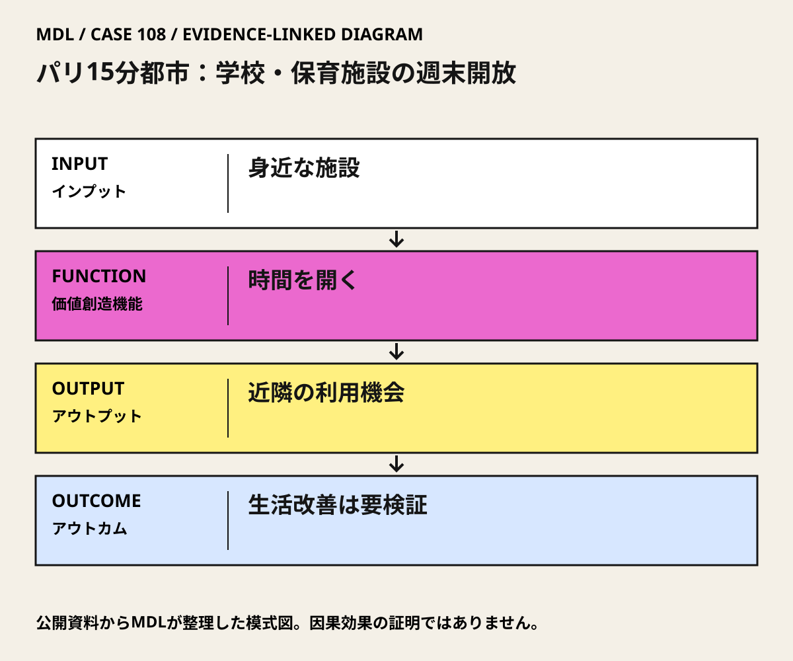

I / INPUT
何を持ち込んでいるか。
活動の出発点となる資源と課題を分けて整理します。「自社」は、その場・制度を運営する組織を指します。
- 他社・事業会社
この政策枠組みと2021年施設開放について、特定企業の設計・運営責任は未確認。
公開資料では未確認- 行政・公共機関
パリ市が政策を展開し、校庭・保育施設の週末開放を公式発表。
公開資料で確認出典 1- スタートアップ
特定のスタートアップをこの政策の実施主体として確認していない。
公開資料では未確認- 市民・利用者・現場
家族や地域団体が開放施設の利用側に位置づけられる。全住民が同じ条件で使えたかの評価は未確認。
公開資料で確認出典 1
有形資産
場所・設備・実証環境関係資本
信頼・ネットワーク・導入先施設を地域に開くには、教育・施設管理と地域利用の調整が必要になる。責任分担の詳細は施設別に確認すべき条件。
金融資本
活動資金・投資・費用負担新設と既存施設開放は費用構造が異なるが、この発表から費用対効果は比較できない。
知的資本・データ
技術・知財・知識・標準課題・ニーズ
誰の何を変えるのかII / VALUE CREATION FUNCTIONS
資源を、どう価値へ変えるか。
以下は既存の8ステップへの編集上の対応づけです。各取り組みの公式な工程名や、全工程を自前で担うことを意味しません。
生活機能を地区で捉える
施設の空く時間を開く
概念を実施単位へ分ける
III / OUTPUT
直接、何が生まれたか。
試作品、データ、契約、標準、育成した人材など、活動から直接生まれたもの。
2021年5月14日の市発表では、先行12校庭に36校庭を加え計48校庭を週末利用へ開き、20保育施設も対象とした。これは当時の発表規模。
公開資料で確認出典 1
IV / OUTCOME
その結果、何が変わったか。
実際の利用、行動、業務、事業、地域の変化。報告された変化と、当該活動に帰属できる効果は区別します。
既存施設を地域の利用機会に転換する政策実装を確認できる。全市民の生活改善や幸福度を測定した数値ではない。
MDLの分析出典 1全住民の15分アクセス達成、概念単独による排出削減・安全改善、開放施設の現在の継続数は未確認。
公開資料では未確認
PROJECT IN FOCUS / 具体的な事例
パリ15分都市：学校・保育施設の週末開放
確認できた段階：既存公共施設の時間帯別開放 調査確認日 2026-10-06
誰の課題を、どう扱ったか
生まれたもの
2021年5月14日の市発表では、先行12校庭に36校庭を加え計48校庭を週末利用へ開き、20保育施設も対象とした。これは当時の発表規模。
確認できた変化
既存施設を地域の利用機会に転換する政策実装を確認できる。全市民の生活改善や幸福度を測定した数値ではない。
評価の限界：2021年の発表数を現在の開放数にしない。Morenoの関与は政策枠組みへの概念提唱・助言で、個々の開放設計は未確認。School Streetsは学校前道路、Oasisは校庭改修、本カードは時間外開放を単位とし、都市政策全体の成果を独立した実装として再計上しない。同じ校庭が複数施策の対象になる可能性もある。
DESIGN BACKWARDS FROM IMPLEMENTATION
社会実装から逆算して、
何を先に整えているか。
実証の先にある導入・運用・継続から、この事例の設計を読み解きます。原典で確認できる仕組みと、MDLの設計解釈・他地域へ応用するための提案を区別して読んでください。「提案」「未実施」と記す内容は、当地で実施済みの工夫ではありません。仕組みの存在と、全案件で成果が出たことも別に扱います。
MORE DETAIL / 運営・根拠・応用
運営の全体像と、学びを深める資料。
費用負担、公表値、応用条件、写真・動画、原典を続けて確認できます。
01どう動かしているのか。
教育・保育等で使う既存の場所を、通常の利用時間以外に地域へ開く。近隣の利用可能な空間と時間を増やす施策として、六つの生活機能や多用途利用を重視する15分都市の考え方と接続する。
意思決定と本人の関与：学習上の判断：自治体と施設管理者が、週末にどの場所を誰へ開き、鍵・安全・清掃・活動を誰が担うかを決める。政策理念への賛同と個別施設の開放判断を分ける。 Carlos Morenoは15分都市の提唱者で、大学公式プロフィールが市長のSmart City特使としての役割を記載。本事例との関係は政策枠組みへの関与であり、個別施設開放の設計・実施責任は未確認。
- 生活機能を地区で捉える
- 施設の空く時間を開く
- 概念を実施単位へ分ける
02誰が負担し、誰が担うか。
2021年発表の週末開放施策について、施設ごとの開放費、予算科目、管理費の負担割合は確認資料では未確認。
制度やプログラムの財源と、各参加企業・地域に発生する費用は同じではありません。公開範囲を超える案件別予算・契約条件は未確認です。
03確認できたこと。
04日本で活かすなら。
日本では15分の円を描く前に、実際の経路、営業時間、費用、段差を調べる。学校開放の可否は地域ごとの管理責任を確認し、利用者の利便と教育活動・近隣への負担を同時に扱う。
05そのまま真似できないこと。
2021年の発表数を現在の開放数にしない。Morenoの関与は政策枠組みへの概念提唱・助言で、個々の開放設計は未確認。School Streetsは学校前道路、Oasisは校庭改修、本カードは時間外開放を単位とし、都市政策全体の成果を独立した実装として再計上しない。同じ校庭が複数施策の対象になる可能性もある。
06次に、何を確かめるか。
提案・未実施：自治体の地域担当と施設管理者が1地区を30日で診断し、90日以内に許可済みの施設開放を試す。利用可能な生活機能、開放時間、利用者の偏り、管理時間・費用を測り、現状維持、時間延長、出張サービス、徒歩経路改善を比較。Continue＝利用機会増と管理負担の両立、Pivot＝利用時間や対象の偏りが大きい、Stop＝安全・鍵・清掃の責任や費用を確保できない。
07写真・図と原資料で確かめる。
現場の写真を見る ↑
DIAGRAM: モビリティデザインラボ · 根拠資料 ↗
図の説明
公開資料に基づく模式図。身近な施設 → 時間を開く → 近隣の利用機会 → 生活改善は要検証。実景や地理的配置を示さない。
2026-10-06 · MDL作成の説明図。第三者の写真・図面の複製ではありません。
冒頭写真：パリ4区のNeuve-Saint-Pierre通り
原資料で、当時の調査・実践を読む ↗08原典を読む。
La ville du quart d’heure est une réponse à l’urgence climatique et sanitaire ↗
本人の概念、六つの機能、学校等の多用途利用
フランス語・本人インタビュー・自治体公式。全文公開（HTML）
Ville du quart d’heure : 48 cours d’écoles et 20 crèches ouvertes aux familles les week-ends ↗
2021年5月の校庭48・保育施設20という実施発表
フランス語・パリ市公式事業発表。本文公開（HTML）
本人と市長特使の関係。現職の継続や個別設計の証拠ではない
フランス語・所属大学公式プロフィール。本文公開（HTML）
本人共著の近接性・多様性の原典
英語・本人共著の原論文。全文PDF・オープンアクセス